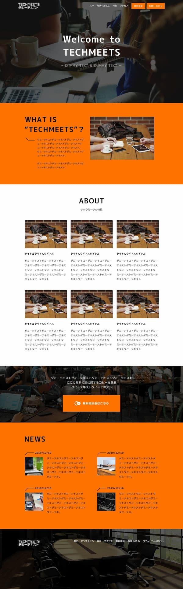
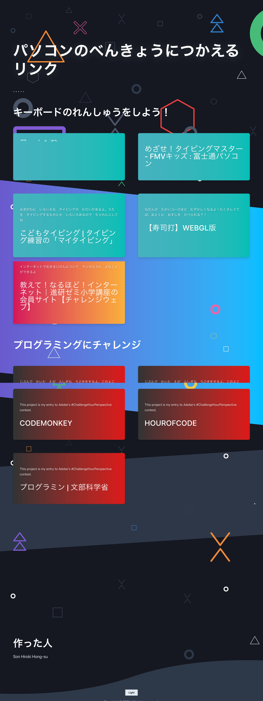
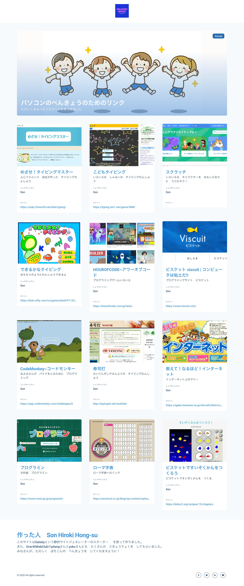
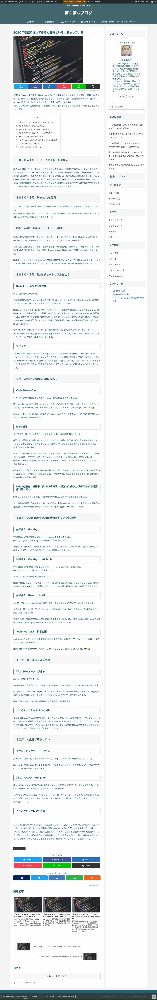

ウェブサイト制作・開発
W
E
B
S
O
N
ていねいなコミュニケーションをとり、依頼者の状況、要望を的確にとらえ、
最適なウェブサイト、施策を提案・構築します。
サービス内容
なんのためにウェブサイトをつくるのでしょうか。作りたいと思う人それぞれに、目的があるはずです。目的に応じた、ホームページ制作、運用、施策を提案します。
WEBSONでは、効率的、効果的に会議を進める技術であるホワイトボード・ミーティング®認定講師資格を持ったそんほんすが、お客様の状況をしっかりと効率よくききとります。（ホワイトボードがなくても大丈夫）
Web技術に明るくなくても大丈夫です。教員経験のあるそんほんすは、あなたの意識にあるキーワードから、適切に課題を導き出し、対応策をわかりやすくご説明いたします。
ホームページ制作、運用、リニューアル

SEO対策、SNS運用代行、コンサルティング

料金
以下に料金表を示します。基本的な総額を表示しています。 サブスクリプションによる契約など、お客様の状況に応じた契約が可能ですので、 お気軽にご相談ください。
スキル
スキルのイントロダクション
-

HTML
HTMLのルールにしたがって、サイトのメッセージを適切に構造化します。そうすることで、ユーザーが検索したときに上位に表示されるようにします。
-

CSS
サイトのページを増やしたり、ちがう製作者に頼んだりしたいと思ったときに、困らないように設計します。
-

JavaScript
ウェブサイトにいろいろな動きを加えます。ユーザーの視線を誘導したり、知らせたい情報を強調したりします。
-

Wordpress
ブログを書くような形でコンテンツを更新できるようにします。既存のデザインから選んでサクッと構築することもできますし、オリジナルデザインをWordPressにして運用することもできます。
-

GatsbyJS
JAMstackという技術を使ったサイトを構築します。WordPress同様、ブログのようにコンテンツを更新できるサイトの制作もできます。サイトの表示がとても早いので、ユーザーの離脱率が下がったり、検索順位でも有利になったりします。
-
ホワイトボード・ミーティング®
株式会社ひとまちが運営する民間の会議スキル。認定講師の資格を持っています。会議において的確で効率的な情報共有のスキルです。参考リンクは こちら
実績
これまでの制作実績を掲載しています。案件として受けたものでも、後悔ができないものもありますので、気になる方はお問い合わせください。
-
 GatsbyJS
JAMstackという技術を使ったサイトを構築します。WordPress同様、ブログのようにコンテンツを更新できるサイトの制作もできます。サイトの表示がとても早いので、ユーザーの離脱率が下がったり、検索順位でも有利になったりします。
-
 GatsbyJS
JAMstackという技術を使ったサイトを構築します。WordPress同様、ブログのようにコンテンツを更新できるサイトの制作もできます。サイトの表示がとても早いので、ユーザーの離脱率が下がったり、検索順位でも有利になったりします。
-
 GatsbyJS
JAMstackという技術を使ったサイトを構築します。WordPress同様、ブログのようにコンテンツを更新できるサイトの制作もできます。サイトの表示がとても早いので、ユーザーの離脱率が下がったり、検索順位でも有利になったりします。
-
 GatsbyJS
JAMstackという技術を使ったサイトを構築します。WordPress同様、ブログのようにコンテンツを更新できるサイトの制作もできます。サイトの表示がとても早いので、ユーザーの離脱率が下がったり、検索順位でも有利になったりします。
-

GatsbyJS
JAMstackという技術を使ったサイトを構築します。WordPress同様、ブログのようにコンテンツを更新できるサイトの制作もできます。サイトの表示がとても早いので、ユーザーの離脱率が下がったり、検索順位でも有利になったりします。
現在教育系教材紹介サイトのコーディング、WordPress化進行中 学習リンク集１ 学習リンク集２ ポートフォリオサイト最初のバージョン 八尾市教職員組合 新規採用者向け特設LP TECHMEETS デザインカンプからコーディング
私について
２０１９年春頃から本格的にプログラミングやウェブ制作の学習にとりくみはじめました。教員経験を通して培ってきたコミュニケーション力や課題解決力をウェブ制作事業によって社会に還元したいという思いが募り、現在副業でウェブ制作・開発にとりくんでいます。
もっと読む >>>